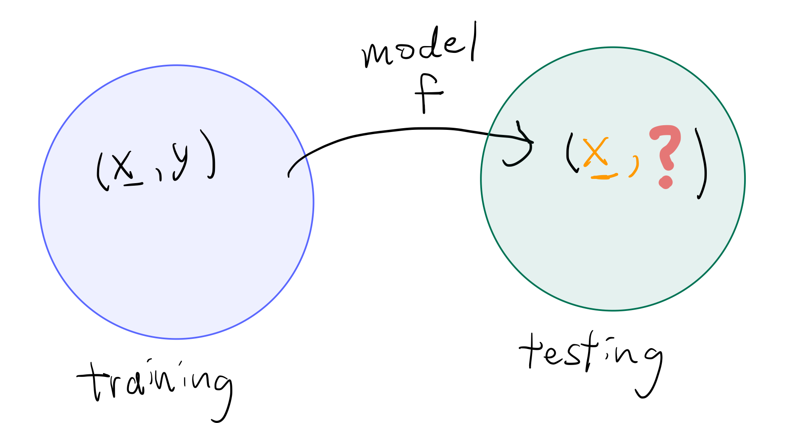
5 Cross Validation
5.1 Introduction
This chapter covers resampling technique called cross-validation.
Cross-validation (CV) is a statistical method used to estimate the skill of machine learning (ML) models. It is commonly used in applied ML to compare and select a model for a given predictive modeling problem because it is easy to understand, easy to implement, and results in skill estimates that generally have a lower bias than other methods.
5.2 Resampling methods
Resampling methods is a way to use the observed data to generate hypothetical samples. It treats an observed sample as a finite population, and random samples are generated/resampled from it to estimate population characteristics and make inferences about the sampled population. It is useful when:
Do not know the underlying distribution of a population
The formula may be difficult to be calculated.
Some commonly used resampling methods include:
Bootstrap: Bootstrap methods are often used when the distribution of the target population is not specified; the sample is the only information available.
Jackknife: The jackknife is a resampling technique used to estimate the bias and variance of a statistic. It is like a leave-one-out (LOO) cross-validation.
Cross-validation: Cross-validation is a model validation technique for assessing how the results of a statistical analysis will generalize to an independent data set. It is mainly used in settings where the goal is prediction, and one wants to estimate how accurately a predictive model will perform in practice.
Permutation tests: Permutation tests are a type of non-parametric statistical test that involves rearranging the data points to test a hypothesis. They are used to determine whether the observed effect is statistically significant by comparing it to the distribution of effects obtained through random permutations of the data.
5.3 Machine Learning Models
Left: What machine learning can do
Right: Model/Methods

5.4 Training and testing/validating sets
Questions
How do we choose between different models \(f_1,\dots,f_m\)?
5.5 Setup
Suppose we have a supervised learning model \(f(X)\to Y\).
Denote the training set by \(\mathcal{T}=\{(X_i,Y_i)\}_{i=1}^{N_{train}}\).
How to choose between the models \(f_1,\dots,f_m\)?
Ideal: \((X,Y)\sim F_{X,Y}\).
Define the generalization error (Population error) as \[ \mathrm{Err}(f) = \mathbb{E}_{X,Y}[\{Y-f(X)\}^2] \]
Choose \(f\) by \[ \arg\min_{f\in\{f_1,\dots,f_m\}} \mathrm{Err}(f) \]
But, \((X,Y)\sim F_{X,Y}\) is usally unknown!
Question:
What to do if we do not know about \(F_{X,Y}\)?
Let \(V:=\{(X_i,Y_i)\}_{i=1}^{N_{Val}}\) be the validating/testing set.
\[ \mathrm{Err}(f) = E[(Y-f(X))^2] \approx \frac{1}{N_{Val}}\sum_{i=1}^{N_{Val}}(Y_i-f(X_i))^2 =: \mathrm{err}_{Val}(f). \]
When \(N_{Val}\to\infty\), \(\mathrm{err}_{Val}(f)\to \mathrm{Err}(f)\).
We can then do \[ \arg\min_{f\in\{f_1,\dots,f_m\}} \mathrm{err}_{Val}(f) \] If \(N_{val}\) is large, we can have good estimate of \(\mathrm{Err}(f)\).
But actually, we may only have small validating set.
Problems with simple Train-Test Split:
Splitting 50-50 wastes data that could improve the model.
Splitting 80-20 may leave too little test data for reliable evaluation.
What we can do? Cross-validation!
Cross-validation uses all data efficiently for training and testing.
5.6 What is Cross-Validation?
Suppose there are 5 folds (\(K=5\)).
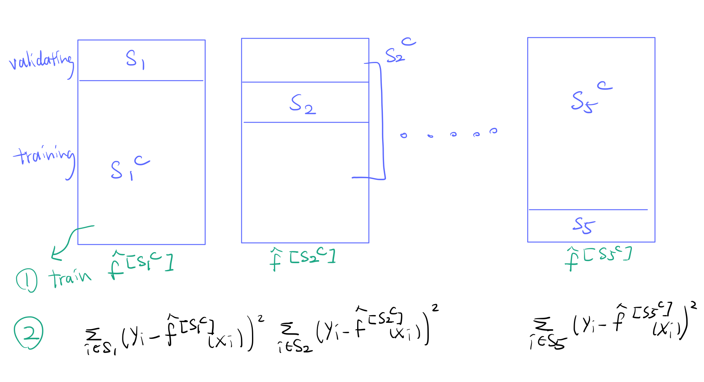
Put together, we have
\[ \mathrm{err}_{cv}(f) = \frac{1}{N}\sum_{k=1}^5 \sum_{i\in S_k}(y_i-\hat{f}^{[s_k^C]}(x_i))^2. \]
Then cross-validation is to find \[ f^* = \arg\min_{f\in\{f_1,\dots,f_m\}} \mathrm{err}_{cv}(f). \]
5.7 K-Fold Cross-Validation
Let \(\mathcal{D}=\{X_i,Y_i\}_{i=1}^N\) be our data.
Split the data into K approximately equal sizes parts/fold \(K\)
For each \(k=1,2,\dots,K\), repeat the following steps:
- Leave the \(k\)th fold \(S_k\) from the data \(\mathcal{D}\), and denote the remaining data as \(S_k^C\). We fit the model to \(S_k^C\) and denote the corresponding model we obtained by \(\hat{f}^{[S_k^C]}\)
- Calculate the total prediction error on the fitted model \(\hat{f}^{[S_k^C]}\) on the left-out fold \(S_k\) \[ \mathrm{err}_{cv,k}(f) = \sum_{i\in S_k} L(Y_i, \hat{f}^{[S_k^C]}(X_i)). \]
The CV estimate of prediction error is \[ \mathrm{err}_{cv}(f) = \frac{1}{N}\sum_{k=1}^K \mathrm{err}_{cv,k}(f). \]
So if we have \(M\) models, \(f_1,f_2,\dots,f_M\), we can use cross-validation to select the best model by computing the cross-validation error for each model \(\mathrm{err}_{cv}(f_1), \mathrm{err}_{cv}(f_2),\dots \mathrm{err}_{cv}(f_M)\)
Then the best model is \[ f^*=\arg\min_{f\in\{f_1,\dots,f_M\}} \mathrm{err}_{cv}(f). \]
There are two many use of the K-fold CV
- Tune hyperparameters
Suppose we have a family of models:
\(y=\beta_0+\sum_{j=1}^L\beta_kx^k+\varepsilon\), \(L\) is the hyperparameter here.
M1. \(y = \beta_0 + \beta_1 x_1 + \varepsilon\)
M2. \(y = \beta_0 + \beta_1 x_1 + \beta_2 x^2 + \varepsilon\)
M3. \(y = \beta_0 + \beta_1 x_1 + \beta_2 x^2 + \beta_3 x^3+ \varepsilon\)
We may use K-fold CV to choose the best \(L\).
- To better evaluate the performance of a model
The number of folds depends on the data size.
5.8 Discussion
Question:
What would you consider when choosing \(K\)?**
Answer: The Bias-Variance Decomposition!
\[\begin{align*} \text{Generalization error} &~=~ \text{variance} &~+~& \text{bias} &~+~& \text{irreducible error} \\ \mathbb{E}_\mathcal{T}[(y-f(x;\mathcal{T}))^2] &~=~ \mathbb{V}ar(x) &~+~& \mathbb{B}\mathrm{ias}^2(x) &~+~& \varepsilon^2. \end{align*}\]
See Section 7.3, Equation (7.9) Hastie et al. (2009).
Pop-up quiz:
Q: What are the characteristic a good model \(f\) should have?
Low bias, high variance
High bias, low variance
Low bias, low variance
High bias, high variance
None of above
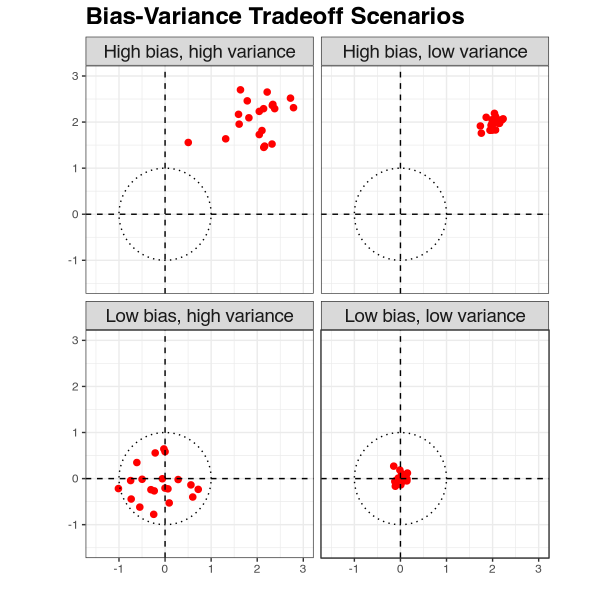.
Bias (Systematic error): The difference between predicted values and the true target.
Variance (Sensitivity to data changes): How much predictions change with new data.
Goal: Minimize both bias and variance.
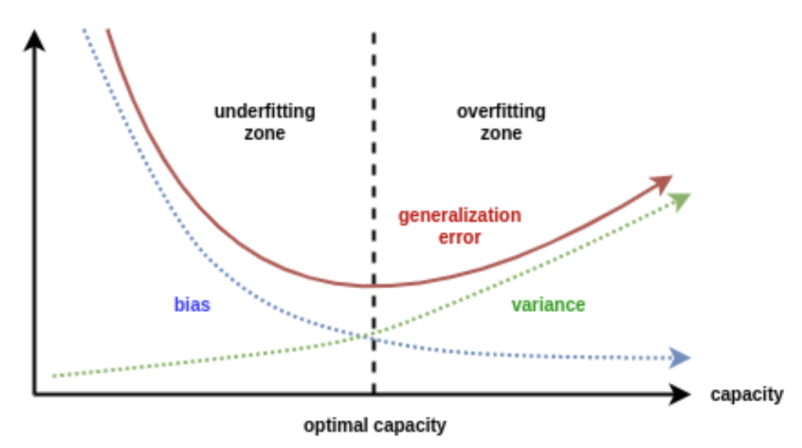
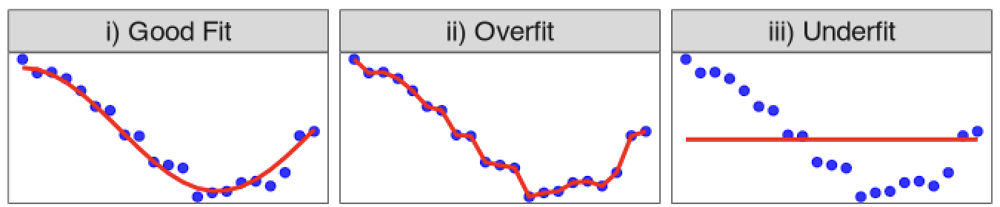
With new data \((X,Y)\) from the same distribution:
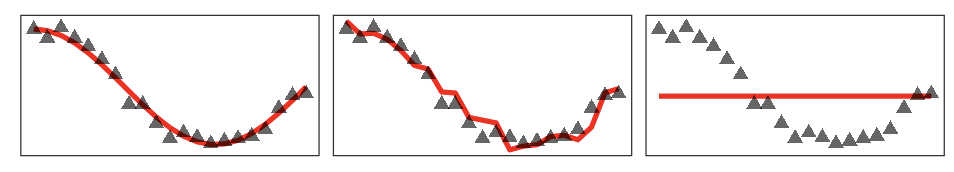
5.9 Choice of Fold K
Bias-Variance Tradeoff in CV:
The choice of K is a tradeoff between bias and variance.
Q: What values of \(K, 2 \leq K \leq N\) should we use?
Large \(K\): high variance, but small bias.
Small \(K\): low variance, but high bias.
Bias decreases as \(K\) increases.
5.10 Example: Stock market
We look at the dataset in Smarket package in R.
It contains the daily percentage returns for the S&P 500 stock index between 2001 and 2005.
\(N = 1250\)
library(ISLR2)
library(kableExtra)
attach(Smarket)
# Create the table and scale it to fit the page
head(Smarket) %>%
kable("latex", caption =" First Few Rows of Smarket Dataset") %>%
kable_styling(full_width = FALSE, position = "center", font_size = 8)5.11 Leave-One-Out Cross-Validation (LOOCV)
When \(K=N\), the size of the training data, it is leave-one-out cross validation.
Instead of creating two subsets of comparable size, a single observation \((x_i, y_i)\) is used for the validation set and the remaining observations make up the training set.
Repeat this for each observation and get the average.
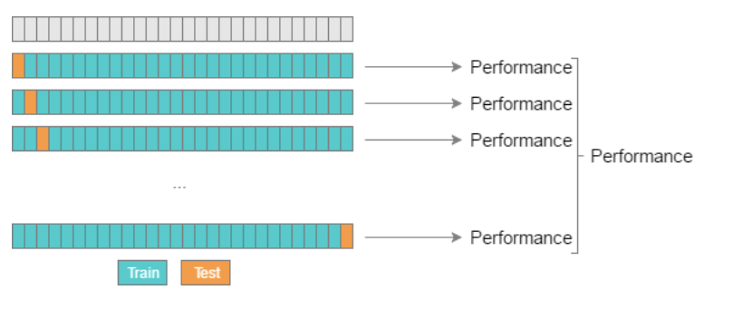
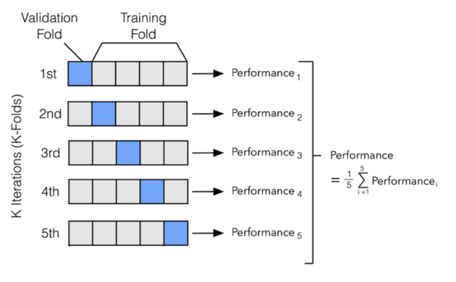
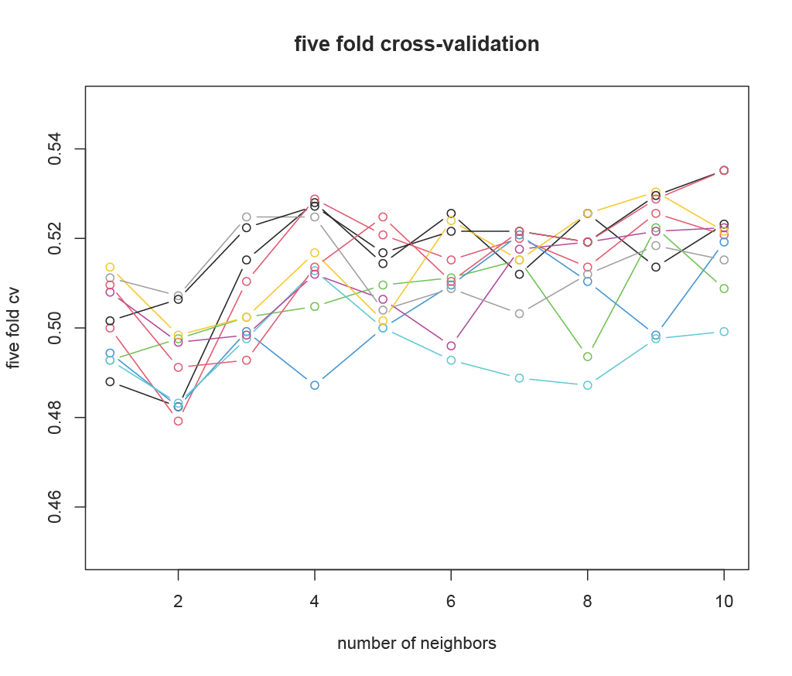
5.12 Take Home Messages
What is CV?
- A method to estimate prediction error using all data efficiently.
Why K-fold?:
- Balances bias and variance effectively.
LOOCV:
- Special case with K = N, unbiased but expensive.
Practical Tips:
K = 5 or K = 10 is common and (usually) works well.
Use CV to tune hyperparameters and compare models.
Note:
- Cross-validation can be applied in various contexts!
Each panel reproduces your model fit:
- Linear: \(y = \beta_0 + \beta_1 x\)
- Quadratic: \(y = \beta_0 + \beta_1 x + \beta_2 x^2\)
- Exponential: \(\log y = \beta_0 + \beta_1 x\)
- Log–Log: \(\log y = \beta_0 + \beta_1 \log x\)
Once the model is estimated, we want to assess the fit. CV can be used to estimate the prediction errors.
library(DAAG); attach(ironslag)
library(ggplot2)
library(patchwork)
# --- raw data ---
df <- data.frame(chemical, magnetic)
a <- seq(10, 40, 0.1)
# --- fits (using coefficients explicitly) ---
L1 <- lm(magnetic ~ chemical, data = df)
yhat1 <- L1$coef[1] + L1$coef[2] * a
L2 <- lm(magnetic ~ chemical + I(chemical^2), data = df)
yhat2 <- L2$coef[1] + L2$coef[2] * a + L2$coef[3] * a^2
L3 <- lm(log(magnetic) ~ chemical, data = df)
logyhat3 <- L3$coef[1] + L3$coef[2] * a
yhat3 <- exp(logyhat3)
L4 <- lm(log(magnetic) ~ log(chemical), data = df)
logyhat4 <- L4$coef[1] + L4$coef[2] * log(a)
# --- assemble data for plotting ---
fits <- data.frame(
a = a,
yhat1 = yhat1,
yhat2 = yhat2,
yhat3 = yhat3,
loga = log(a),
logyhat4 = logyhat4
)
# --- plots ---
p1 <- ggplot(df, aes(x = chemical, y = magnetic)) +
geom_point(shape = 16) +
geom_line(data = fits, aes(x = a, y = yhat1), linewidth = 1.1, color = "steelblue") +
ggtitle("Linear") +
theme_bw(base_size = 13) +
theme(plot.title = element_text(hjust = 0.5))
p2 <- ggplot(df, aes(x = chemical, y = magnetic)) +
geom_point(shape = 16) +
geom_line(data = fits, aes(x = a, y = yhat2), linewidth = 1.1, color = "darkgreen") +
ggtitle("Quadratic") +
theme_bw(base_size = 13) +
theme(plot.title = element_text(hjust = 0.5))
p3 <- ggplot(df, aes(x = chemical, y = magnetic)) +
geom_point(shape = 16) +
geom_line(data = fits, aes(x = a, y = yhat3), linewidth = 1.1, color = "firebrick") +
ggtitle("Exponential") +
theme_bw(base_size = 13) +
theme(plot.title = element_text(hjust = 0.5))
p4 <- ggplot(df, aes(x = log(chemical), y = log(magnetic))) +
geom_point(shape = 16) +
geom_line(data = fits, aes(x = loga, y = logyhat4), linewidth = 1.1, color = "purple") +
ggtitle("Log–Log") +
theme_bw(base_size = 13) +
theme(plot.title = element_text(hjust = 0.5))
# --- combine in 2×2 grid ---
(p1 + p2) / (p3 + p4)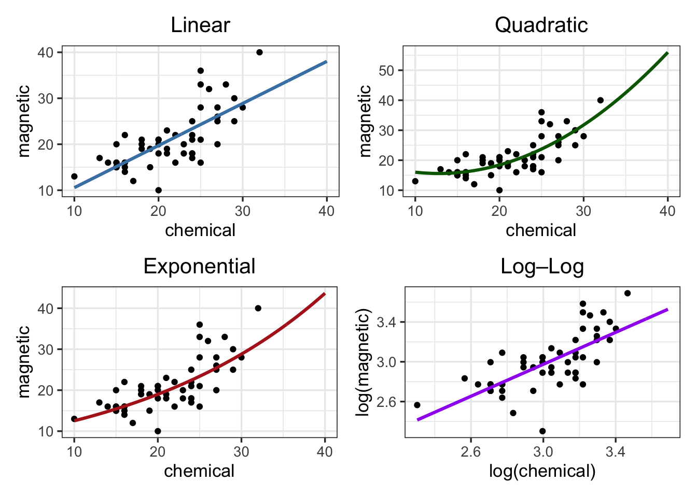
attach(ironslag)The following objects are masked from ironslag (pos = 3):
chemical, magneticn <- length(magnetic) # in DAAG ironslag
e1 <- e2 <- e3 <- e4 <- numeric(n)
# for n-fold cross validation
# fit models on leave-one-out samples
for (k in 1:n) {
y <- magnetic[-k]
x <- chemical[-k]
J1 <- lm(y ~ x)
yhat1 <- J1$coef[1] + J1$coef[2] * chemical[k]
e1[k] <- magnetic[k] - yhat1
J2 <- lm(y ~ x + I(x^2))
yhat2 <- J2$coef[1] + J2$coef[2] * chemical[k] +
J2$coef[3] * chemical[k]^2
e2[k] <- magnetic[k] - yhat2
J3 <- lm(log(y) ~ x)
logyhat3 <- J3$coef[1] + J3$coef[2] * chemical[k]
yhat3 <- exp(logyhat3)
e3[k] <- magnetic[k] - yhat3
J4 <- lm(log(y) ~ log(x))
logyhat4 <- J4$coef[1] + J4$coef[2] * log(chemical[k])
yhat4 <- exp(logyhat4)
e4[k] <- magnetic[k] - yhat4
}
# compute MSEs
mse <- c(mean(e1^2), mean(e2^2), mean(e3^2), mean(e4^2))
# put into a tidy data frame
results <- data.frame(
Model = c("Linear", "Quadratic", "Exponential", "Log–Log"),
MSE = round(mse, 4)
)
# display as a clean table
knitr::kable(results,
caption = "Model Comparison of Mean Squared Errors", align = c("l", "c"))| Model | MSE |
|---|---|
| Linear | 19.5564 |
| Quadratic | 17.8525 |
| Exponential | 18.4419 |
| Log–Log | 20.4542 |
L2
Call:
lm(formula = magnetic ~ chemical + I(chemical^2), data = df)
Coefficients:
(Intercept) chemical I(chemical^2)
24.49262 -1.39334 0.05452 So the best fitted model is \[ \hat{Y} = 24.493 + -1.393\,X + 0.055\,X^2 \]
par(mfrow = c(2, 2)) #layout for graphs
plot(L2$fit, L2$res) #residuals vs fitted values
abline(0, 0) #reference line
qqnorm(L2$res) #normal probability plot
qqline(L2$res) #reference line
par(mfrow = c(1, 1)) #restore display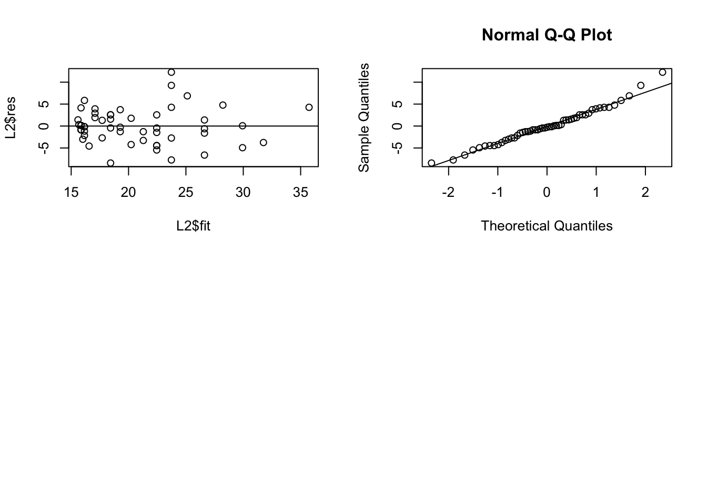
Note: This lecture is based on the book by Hastie et al. (2009), and James et al. (2013).
Section 7.11 in Hastie, T., Tibshirani R. and Friedman, J. (2008). The Elements of Statistical Learning. Springer, 2nd edition.
https://djsaunde.wordpress.com/2017/07/17/the-bias-variance-tradeoff/↩︎